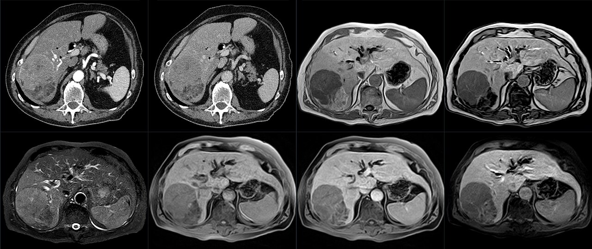

Ficha del catálogo
Hepatocarcinoma
- Sistema
- Digestivo
- Modalidad
- RM
- Región
- Hígado
- Dificultad
- Avanzado
Es el tumor maligno primario más frecuente del hígado y surge casi siempre sobre un hígado con hepatopatía crónica o cirrosis. Su desarrollo sigue una secuencia de carcinogénesis en la que el nódulo pierde aporte portal y gana irrigación arterial anómala. Es una de las pocas neoplasias que puede diagnosticarse por imagen sin confirmación histológica cuando se cumplen criterios estrictos en un paciente de riesgo.
Técnica
La resonancia dinámica con contraste es el estudio más sensible para caracterizarlo, aunque la tomografía multifásica es una alternativa válida. Se requiere una fase arterial tardía bien temporizada, ya que una fase demasiado precoz no muestra el realce tumoral. El uso de contraste hepatoespecífico añade la fase hepatobiliar, en la que el tumor típicamente aparece hipointenso porque no capta el agente.
Qué observar
- Hiperrealce arterial no periférico, más intenso que el parénquima adyacente en fase arterial tardía
- Lavado no periférico en fase portal o tardía, con la lesión más hipodensa o hipointensa que el hígado
- Cápsula de realce periférico visible en fase portal o tardía
- Crecimiento umbral respecto a estudios previos comparables
- Trombo tumoral en vena porta o suprahepáticas, con realce arterial y expansión del vaso
- Restricción a la difusión, contenido graso intralesional y focos hemorrágicos
Hallazgos
La lesión típica muestra realce arterial intenso seguido de lavado y cápsula, sobre un hígado con cambios crónicos. En resonancia suele ser levemente hiperintensa en T2, restringe en difusión y puede contener grasa detectable en la secuencia fuera de fase, sobre todo en las lesiones bien diferenciadas. Las formas infiltrativas son más difíciles: Producen una alteración de señal mal definida y permeativa, frecuentemente con trombo tumoral portal, y pueden pasar inadvertidas en un hígado ya heterogéneo.
Perlas
El trombo portal con realce arterial y expansión del calibre del vaso es prácticamente diagnóstico de invasión tumoral y cambia por completo el estadio y las opciones terapéuticas. Ante una trombosis portal en un paciente cirrótico siempre debe buscarse realce interno del trombo y continuidad con una lesión parenquimatosa, porque el trombo blando no realza ni expande la vena de la misma forma.
Diagnóstico diferencial
- Hemangioma hepático
- Realce nodular periférico discontinuo con relleno centrípeto progresivo y persistencia del contraste, sin lavado.
- Hiperplasia nodular focal
- Realce arterial homogéneo con cicatriz central hiperintensa en T2 y retención en fase hepatobiliar.
- Colangiocarcinoma intrahepático
- Realce periférico con progresión centrípeta tardía, retracción capsular y dilatación de vías biliares periféricas.
- Nódulo displásico de alto grado
- Sin lavado ni cápsula, y sin las características vasculares completas del hepatocarcinoma.
- Metástasis hipervascular
- Lesiones múltiples con primario conocido y hígado no cirrótico, a menudo con realce en anillo.
Simuladores
- Shunts arterioportales transitorios, que realzan en fase arterial y desaparecen después
- Nódulos de regeneración hipervasculares en el hígado cirrótico
- Pseudolesiones por perfusión anómala junto a áreas de esteatosis focal
Por modalidad
- US
- Método de tamizaje semestral en pacientes de riesgo; el ultrasonido con contraste caracteriza el patrón de realce en tiempo real
- TC
- Estudio multifásico ampliamente disponible, adecuado para estadificación y planeación de tratamientos locorregionales
- RM
- Mayor sensibilidad para lesiones pequeñas y mejor caracterización gracias a la difusión y a la fase hepatobiliar
Protocolo
Estudio multifásico con fase sin contraste, fase arterial tardía a los 30 a 40 segundos, fase portal a los 60 a 80 segundos y fase tardía a los 3 a 5 minutos. En resonancia se añaden T1 en fase y fuera de fase, T2 con supresión grasa y difusión con varios valores b. Con contraste hepatoespecífico se incluye la fase hepatobiliar a los 20 minutos, donde el tumor suele quedar hipointenso.
Clasificación
LI-RADS es el sistema de referencia para el informe en pacientes de riesgo, con categorías LR-1 a LR-5 según la probabilidad de hepatocarcinoma, más LR-M para malignidad no específica y LR-TIV para tumor en vena. La categoría LR-5 se asigna cuando concurren tamaño y criterios mayores definidos, y se considera diagnóstica sin biopsia. Para la estadificación y el tratamiento se usa el sistema de Barcelona, que integra la extensión tumoral, la función hepática y el estado funcional del paciente para orientar entre resección, trasplante, ablación, quimioembolización o tratamiento sistémico.
Errores frecuentes
- Adquirir la fase arterial demasiado pronto y perder el realce característico de la lesión
- Confundir shunts arterioportales pequeños y transitorios con nódulos tumorales
- Pasar por alto la forma infiltrativa, que se manifiesta sobre todo por trombo portal tumoral

hepatocarcinoma LI-RADS lavado fase arterial trombo tumoral cirrosis BCLC